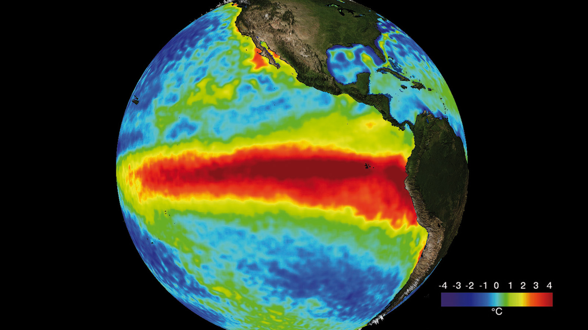
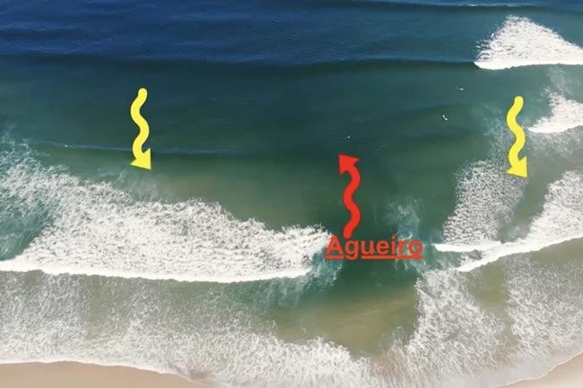
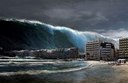
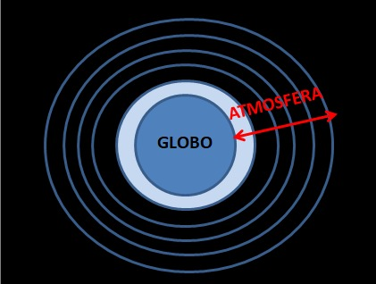

pontos
Onde ocorre a corrente do Golfo?
Onde surge o fenómeno do El Niño?
As marés são geradas por?
O que é um agueiro?
Como são geradas as ondas da superfície do oceano?
O que é um Tsunami?
Como se chama a camada da atmosfera mais perto do Globo?
A que é devido o efeito de estufa no Globo?





